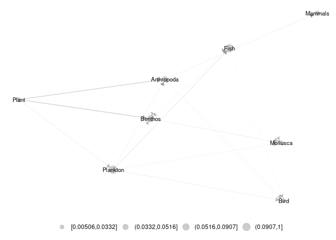
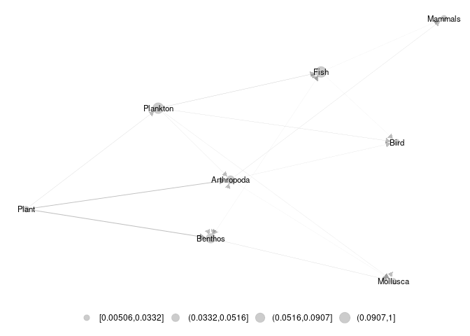
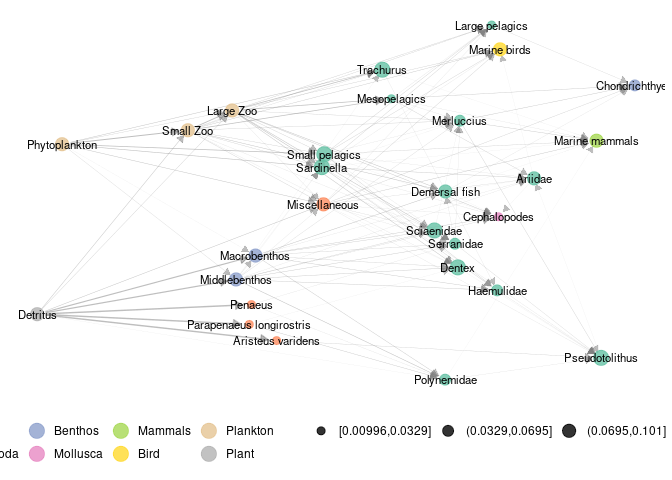

pkgdown 
Description
A collection of tools in R to represent and analyse trophic networks in space accross aggregation levels. The package contains a layout algorithm specifically designed for trophic networks, using trophic levels and dimension reduction on diffusion kernel with .
Introduction and basics
What is a metanetwork ?
In ecological networks literature, metanetwork refers to a set of networks in space. In R package ‘metanetwork’, we stick to a widespread (however restrictive) case:
- a potential interaction network (the metaweb, can be built using expert knowledge)
- local abundance tables, local networks are then induced subgraph of the metaweb by local abundances
Additional information might be considered (and used in ‘metanetwork’) as:
- a trophic table indicating a hierarchy of nodes of the metaweb, in order to study the metanetwork at different aggregation levels
What ‘metanetwork’ package provides ?
#Angola dataset
ggmetanet(meta_angola,beta = 0.05,legend = "Phylum")
Angola data set
An example using real data is accessible in metanetwork. It consists in the Angoala coastal trophic network from Angelini, R. & Vaz-Velho, F. (2011)., abundance data at different time steps (1986 and 2003) and a trophic table, indicating the groups to which species belong.
angola metanetwork object
angola dataset is lazy loaded in metanetwork. meta_angola consists in a object of class metanetwork.
print_metanet(meta_angola)
## object of class metanetwork
## metaweb has 28 nodes and 127 edges
## 2 local networks
## available resolutions are: Species Phylum
plot_trophic_table function
Contrary to the pyramid example, angola dataset do have a trophic table, describing nodes memberships in higher relevant groups. In angola dataset, two different taxonomic resolutions are available. Networks can be handled and represented at Species or Phylum level.
The plot_trophic_table function allows representing the tree describing species memberships.
ggnet.custom = ggnet.default
ggnet.custom$label.size = 2
plot_trophicTable(meta_angola,ggnet.config = ggnet.custom)
append_aggregated_network method
The method append_aggregated_network allows computing and appending aggregated networks (at the different available resolutions) to the current metanetwork.
meta_angola = append_agg_nets(meta_angola)
print(meta_angola)
## $metaweb
## IGRAPH f873652 DNW- 28 127 -- metaweb
## + attr: res (g/c), name (g/c), name (v/c), ab (v/n), TL (v/n), weight
## | (e/n)
## + edges from f873652 (vertex names):
## [1] Trachurus ->Haemulidae Trachurus ->Marine mammals
## [3] Sardinella->Ariidae Sardinella->Merluccius
## [5] Sardinella->Pseudotolithus Sardinella->Serranidae
## [7] Sardinella->Haemulidae Sardinella->Small pelagics
## [9] Sardinella->Large pelagics Sardinella->Cephalopodes
## [11] Sardinella->Marine mammals Sardinella->Marine birds
## [13] Sciaenidae->Merluccius Sciaenidae->Serranidae
## + ... omitted several edges
##
## $abTable
## Trachurus Sardinella Sciaenidae Ariidae Merluccius Dentex
## X1986 0.3100092 0.3144169 0.02424242 0.01689624 0.02938476 0.007346189
## X2003 0.1465201 0.1792717 0.06895066 0.02413273 0.00258565 0.068950657
## Pseudotolithus Serranidae Polynemidae Parapenaeus longirostris
## X1986 0.004407713 0.004407713 0.005876951 0.009550046
## X2003 0.072398190 0.018961431 0.017237664 0.006377936
## Haemulidae Aristeus varidens Small pelagics Mesopelagics Large pelagics
## X1986 0.008080808 0.003673095 0.03746556 0.001469238 0.004407713
## X2003 0.020685197 0.005860806 0.07239819 0.003447533 0.003275156
## Demersal fish Chondrichthyes Cephalopodes Miscellaneous Penaeus
## X1986 0.005876951 0.002938476 0.0007346189 0.007346189 0.001469238
## X2003 0.034475329 0.013790131 0.0068950657 0.027580263 0.006205559
## Marine mammals Marine birds Macrobenthos Middlebenthos Large Zoo
## X1986 0.025 0.025 0.025 0.025 0.025
## X2003 0.025 0.025 0.025 0.025 0.025
## Small Zoo Phytoplankton Detritus
## X1986 0.025 0.025 0.025
## X2003 0.025 0.025 0.025
##
## $trophicTable
## Species Phylum
## Ariidae Ariidae Fish
## Aristeus varidens Aristeus varidens Arthropoda
## Cephalopodes Cephalopodes Mollusca
## Chondrichthyes Chondrichthyes Benthos
## Demersal fish Demersal fish Fish
## Dentex Dentex Fish
## Detritus Detritus Plant
## Haemulidae Haemulidae Fish
## Large pelagics Large pelagics Fish
## Large Zoo Large Zoo Plankton
## Macrobenthos Macrobenthos Benthos
## Marine birds Marine birds Bird
## Marine mammals Marine mammals Mammals
## Merluccius Merluccius Fish
## Mesopelagics Mesopelagics Fish
## Middlebenthos Middlebenthos Benthos
## Miscellaneous Miscellaneous Arthropoda
## Parapenaeus longirostris Parapenaeus longirostris Arthropoda
## Penaeus Penaeus Arthropoda
## Phytoplankton Phytoplankton Plankton
## Polynemidae Polynemidae Fish
## Pseudotolithus Pseudotolithus Fish
## Sardinella Sardinella Fish
## Sciaenidae Sciaenidae Fish
## Serranidae Serranidae Fish
## Small pelagics Small pelagics Fish
## Small Zoo Small Zoo Plankton
## Trachurus Trachurus Fish
##
## $covariable
## NULL
##
## $X1986
## IGRAPH eeeeb2e DNW- 28 127 -- X1986
## + attr: res (g/c), name (g/c), name (v/c), ab (v/n), TL (v/n), weight
## | (e/n)
## + edges from eeeeb2e (vertex names):
## [1] Trachurus ->Haemulidae Trachurus ->Marine mammals
## [3] Sardinella->Ariidae Sardinella->Merluccius
## [5] Sardinella->Pseudotolithus Sardinella->Serranidae
## [7] Sardinella->Haemulidae Sardinella->Small pelagics
## [9] Sardinella->Large pelagics Sardinella->Cephalopodes
## [11] Sardinella->Marine mammals Sardinella->Marine birds
## [13] Sciaenidae->Merluccius Sciaenidae->Serranidae
## + ... omitted several edges
##
## $X2003
## IGRAPH b673113 DNW- 28 127 -- X2003
## + attr: res (g/c), name (g/c), name (v/c), ab (v/n), TL (v/n), weight
## | (e/n)
## + edges from b673113 (vertex names):
## [1] Trachurus ->Haemulidae Trachurus ->Marine mammals
## [3] Sardinella->Ariidae Sardinella->Merluccius
## [5] Sardinella->Pseudotolithus Sardinella->Serranidae
## [7] Sardinella->Haemulidae Sardinella->Small pelagics
## [9] Sardinella->Large pelagics Sardinella->Cephalopodes
## [11] Sardinella->Marine mammals Sardinella->Marine birds
## [13] Sciaenidae->Merluccius Sciaenidae->Serranidae
## + ... omitted several edges
##
## $metaweb_Phylum
## IGRAPH d9d7751 DNW- 8 24 -- metaweb
## + attr: res (g/c), name (g/c), name (v/c), ab (v/n), weight (e/n)
## + edges from d9d7751 (vertex names):
## [1] Arthropoda->Benthos Arthropoda->Bird Arthropoda->Fish
## [4] Arthropoda->Mammals Arthropoda->Mollusca Benthos ->Arthropoda
## [7] Benthos ->Benthos Benthos ->Fish Benthos ->Mollusca
## [10] Fish ->Benthos Fish ->Bird Fish ->Fish
## [13] Fish ->Mammals Fish ->Mollusca Plankton ->Arthropoda
## [16] Plankton ->Benthos Plankton ->Bird Plankton ->Fish
## [19] Plankton ->Mollusca Plankton ->Plankton Plant ->Arthropoda
## [22] Plant ->Benthos Plant ->Fish Plant ->Plankton
##
## $X1986_Phylum
## IGRAPH f474bcc DNW- 8 24 -- X1986
## + attr: res (g/c), name (g/c), name (v/c), ab (v/n), weight (e/n)
## + edges from f474bcc (vertex names):
## [1] Arthropoda->Benthos Arthropoda->Bird Arthropoda->Fish
## [4] Arthropoda->Mammals Arthropoda->Mollusca Benthos ->Arthropoda
## [7] Benthos ->Benthos Benthos ->Fish Benthos ->Mollusca
## [10] Fish ->Benthos Fish ->Bird Fish ->Fish
## [13] Fish ->Mammals Fish ->Mollusca Plankton ->Arthropoda
## [16] Plankton ->Benthos Plankton ->Bird Plankton ->Fish
## [19] Plankton ->Mollusca Plankton ->Plankton Plant ->Arthropoda
## [22] Plant ->Benthos Plant ->Fish Plant ->Plankton
##
## $X2003_Phylum
## IGRAPH d28b52f DNW- 8 24 -- X2003
## + attr: res (g/c), name (g/c), name (v/c), ab (v/n), weight (e/n)
## + edges from d28b52f (vertex names):
## [1] Arthropoda->Benthos Arthropoda->Bird Arthropoda->Fish
## [4] Arthropoda->Mammals Arthropoda->Mollusca Benthos ->Arthropoda
## [7] Benthos ->Benthos Benthos ->Fish Benthos ->Mollusca
## [10] Fish ->Benthos Fish ->Bird Fish ->Fish
## [13] Fish ->Mammals Fish ->Mollusca Plankton ->Arthropoda
## [16] Plankton ->Benthos Plankton ->Bird Plankton ->Fish
## [19] Plankton ->Mollusca Plankton ->Plankton Plant ->Arthropoda
## [22] Plant ->Benthos Plant ->Fish Plant ->Plankton
##
## attr(,"class")
## [1] "metanetwork"Representing aggregated networks, adding a legend to networks
Once computed, ggmetanet function allows representing aggregated networks and legending local networks using trophic table. Do not forget to first compute trophic levels.
meta_angola = compute_TL(meta_angola)
ggmetanet(g = meta_angola$metaweb_Phylum,beta = 1,metanetwork = meta_angola)
Node sizes are proportional to relative abundances. Trophic table allows adding a legend to network at the finest resolution.
ggmetanet(g = meta_angola$metaweb,beta = 0.04,legend = 'Phylum',metanetwork = meta_angola)
diff_plot
diff_plot(g1 = meta_angola$X1986,g2 = meta_angola$X2003,beta = 0.04,metanetwork = meta_angola)
vismetaNetwork function
metanetwork allows representing trophic networks in interactive way using visNetwork function and both layout algorithms. We highly recommend this function to explore large and dense networks. Since outputs of this functions cannot be rendered on this README, they are saved in ./vismetaNetwork in html format. x_y_range argument allows controlling the x-axis and y-axis scale.
vismetaNetwork(metanetwork = meta_angola,beta = 0.04,legend = 'group',x_y_range = c(10,0.05))Interactive visualisation of angola dataset and other trophic networks using vismetaNetwork are available at https://shiny.osug.fr/app/ecological-networks.
Additional features
attach_layout function
Since TL-tsne layout is stochastic and requires (a bit of) computation times, saving and using the the same layout (for a given β value) is recommended. Moreover, it makes easier visual network analysis and comparison since it is fixed. attach_layout function allows saving computed layouts by attaching them as a node attribute.
#attaching a layout to the metaweb
meta_angola = attach_layout(metanetwork = meta_angola,beta = 0.05)
## beta = 0.05
## Epoch: Iteration #100 error is: 907.410775018065
## Epoch: Iteration #200 error is: 217.134318228944
## Epoch: Iteration #300 error is: 217.267102347787
#layout is saved as node attribute (only one component since the other one is trophic level)
V(meta_angola$metaweb)$TL
## [1] 1.5819853 1.3046314 1.8207464 2.2772862 1.9374378 1.9280135 2.5847122
## [8] 1.9150426 1.8696796 0.9721697 2.1079731 1.0974520 1.3157930 1.6233394
## [15] 2.0829452 1.8709379 2.7391262 2.1144788 1.3122002 0.9820602 2.5636889
## [22] 2.1213395 1.0005468 0.9115165 0.8937117 0.6906842 0.1142234 0.0000000
V(meta_angola$metaweb)$layout_beta0.05_1
## NULL
#ggmetanet uses computed layout
ggmetanet(meta_angola,beta = 0.05,legend = "Phylum")
## mode is TL-tsne
#attaching a new layout for the same beta value
meta_angola = attach_layout(metanetwork = meta_angola,beta = 0.05)
## beta = 0.05
## Epoch: Iteration #100 error is: 907.410775018378
## Epoch: Iteration #200 error is: 217.13824804532
## Epoch: Iteration #300 error is: 217.268236454133
#ggmetanet with the new 'TL-tsne-run
ggmetanet(meta_angola,beta = 0.05,legend = "Phylum",nrep_ly = 2)
## mode is TL-tsneNotice that even if the two layouts are quite different in term of global structure, they share some features in terms of local structure.
Using metaweb layout
Using metaweb layout can ease the representation and comparaison of multiple local networks.
#using metaweb layout to represent a local network
ggmetanet(g = meta_angola$X1986,metanetwork = meta_angola,
legend = "Phylum",layout_metaweb = T,beta = 0.05)
## mode is TL-tsne
#using metaweb layout for diffplot
diff_plot(g1 = meta_angola$X1986,g2 = meta_angola$X2003,
metanetwork = meta_angola,beta = 0.05,
layout_metaweb = T)
## mode is TL-tsne
## plotting: X1986_Species - X2003_Species
## mode is TL-tsne
Authors
This package is currently developed by Marc Ohlmann from Laboratoire d’Ecologie Alpine, Grenoble and Jimmy Garnier and Laurent Vuillon from Laboratoire de Mathématiques, Chambéry. It is supported by the ANR ‘Globnets’.
Contact
For any bugs, information or feedback, please contact Marc Ohlmann.